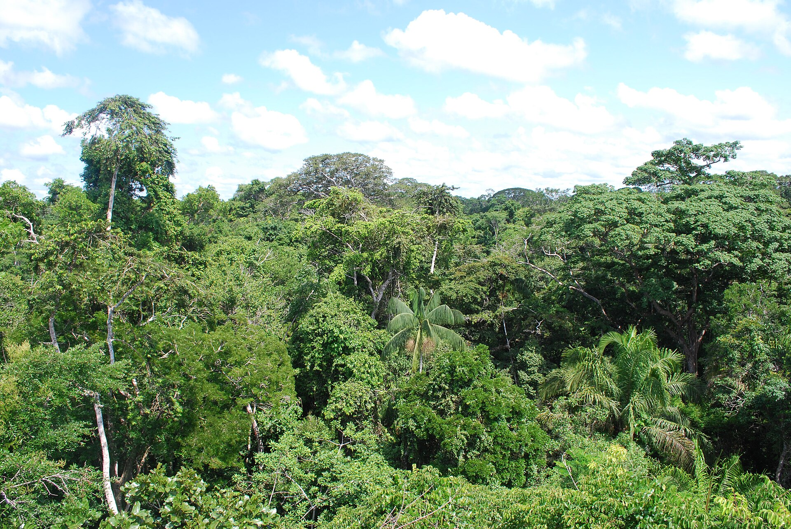
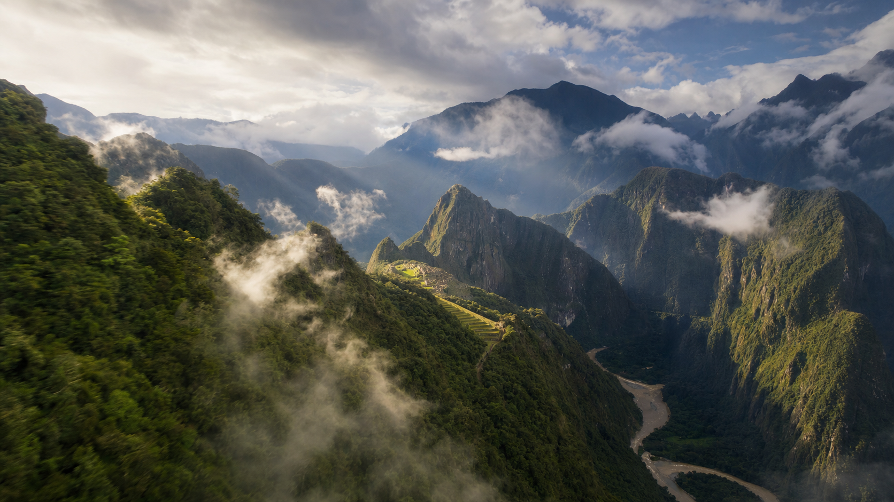
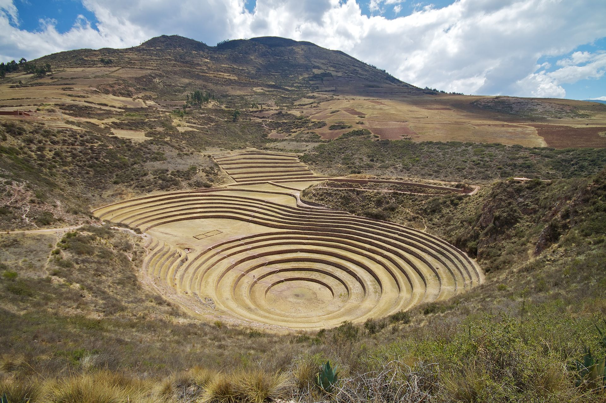
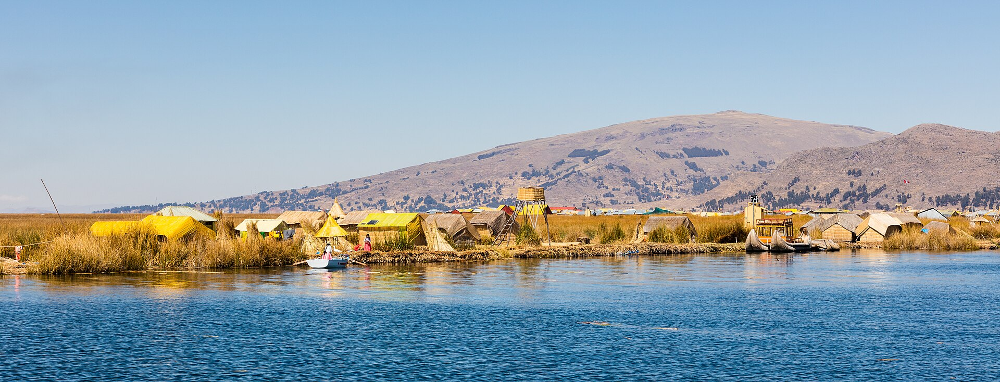
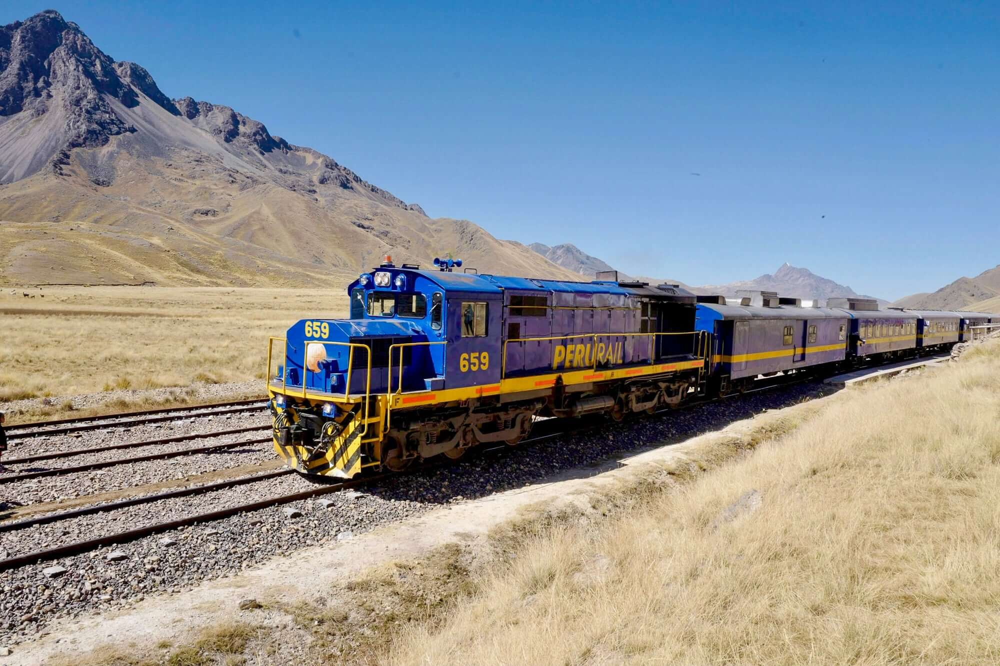
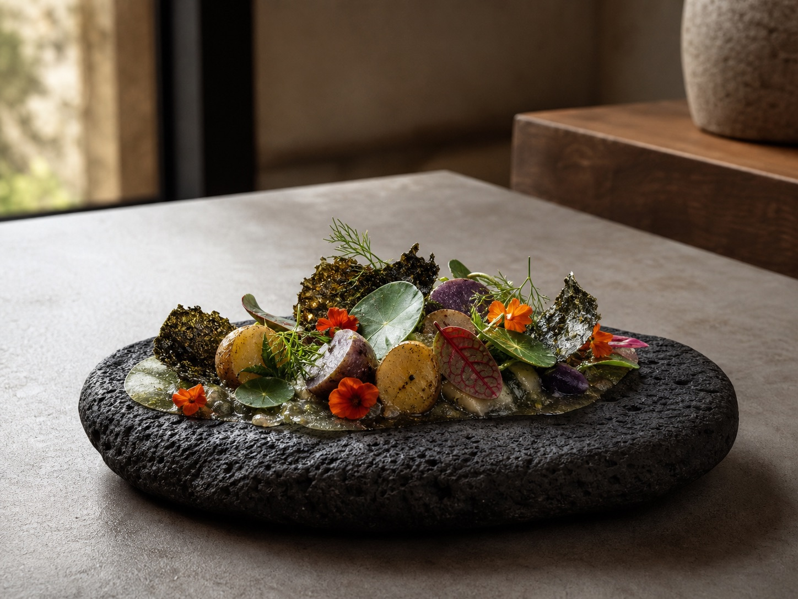

从Puerto Maldonado继续乘车、乘船，真正进入Tambopata雨林深处，连续住两晚。白天走树冠吊桥、寻找猴群与热带鸟类，夜晚跟着向导寻找凯门鳄、昆虫和夜行动物。
看雨林实拍参考 ↗
Tentative itinerary · 暂定行程
从利马的太平洋海岸进入 Tambopata 雨林，再沿安第斯山脉穿过马丘比丘、圣谷、库斯科与的的喀喀湖，最后抵达白城 Arequipa。
公开展示版 · 完整行程时间线已开放；住宿名称、地址与具体寄存地点仅向确认成员提供。
Route overview
从太平洋沿岸横跨亚马逊低地，再折返安第斯山脉与南部高原。地图采用真实经纬度，可拖动、缩放并点击点位查看地点性质。
点位使用城市、车站或遗址的真实经纬度；彩色连线表达本次交通衔接关系，不代表飞机航迹或汽车、铁路的逐弯实际走向。Tambopata 是广大雨林区域，当前以门户城市 Puerto Maldonado 标示，待 lodge 确认后可补充住宿的精确坐标。
从Puerto Maldonado继续乘车、乘船，真正进入Tambopata雨林深处，连续住两晚。白天走树冠吊桥、寻找猴群与热带鸟类，夜晚跟着向导寻找凯门鳄、昆虫和夜行动物。
看雨林实拍参考 ↗
搭乘观景火车穿过乌鲁班巴河谷，再沿盘山公路抵达藏在云雾与群山之间的马丘比丘。完整游览经典Circuit 2，从标志性观景台进入梯田、神庙、石墙与城市遗址。
看马丘比丘旅行笔记 ↗
Chinchero、Moray、Maras盐田和Ollantaytambo四大圣谷现场一次串联，看印加人如何修筑梯田、制造微气候、引导盐水，并用巨石建起至今仍在生活的古镇。
看印加圣谷实拍参考 ↗
的的喀喀湖海拔约3,800米。乘私人快船走访Uros芦苇浮岛与Taquile Island，并在湖上Lodge住一晚，看日落沉入湖面，再从湖光与雪山之间醒来。
看芦苇浮岛真实生活 ↗
完全不枯燥的十个小时：从库斯科一路穿越安第斯山脉，雪山、草原、河谷、羊驼和高原村落不断从观景车厢外展开。列车上还有三道式午餐、下午茶、音乐舞蹈与开放式观景车厢。
看Puno—Cusco火车攻略 ↗
Central曾登顶“世界50最佳餐厅”榜首，它把太平洋、安第斯与亚马逊按照海拔搬进一套菜单。再加上Hotel B下午茶与El Tupay，让这趟旅行也用味觉走完一遍。
看世界第一餐厅吃什么 ↗
Day by day · Visual itinerary
16天被整理为7个目的地章节。日期、交通、住宿与真实场景放在同一个版面里，公开版展示完整时间线与执行安排；住宿名称、地址和具体寄存地点仅向确认成员提供。
先穿过半个地球，再从Miraflores海岸、利马历史中心与前哥伦布文明进入秘鲁。城市遗产、考古展陈和海崖地形共同构成旅程的第一章。
21:30从上海浦东出发，搭乘法航，经巴黎戴高乐机场转机前往利马。
国际段最终以出票行程单为准。
抵达时已过日落，这段散步只用于透气和适应时差；体力不足可直接取消。
住宿 Miraflores市区特色住宿，具体名称与地址仅向确认成员提供。
全天使用同一辆包车；LUM室内18:00关闭，日落属于馆外公共空间。
住宿 Barranco历史街区特色住宿，具体名称与地址仅向确认成员提供。
Puerto Maldonado只是入口。真正的旅程从公路转向河道，在Tambopata的原生林、静水湖与夜色中寻找金刚鹦鹉、猴群和雨林微小的动静。
付款前书面确认机场接送、大箱保管、9月27日取件送机与航班衔接。
住宿 亚马逊生态营地 · 3天2晚套餐第1晚，具体名称与地址仅向确认成员提供。
Lake Sandoval能否替换、是否加价，以及天气取消后的替代活动均需书面确认。
住宿 亚马逊生态营地 · 套餐第2晚，具体名称与地址仅向确认成员提供。
离开低海拔雨林后先在库斯科休息，再以私人车穿过Chinchero、Moray与Maras，逐渐下降到圣谷。把海拔适应和印加农业景观放在前面，为马丘比丘留出完整的一天。
El Tupay周日不营业；刚从雨林进入高原，应少饮酒、早休息，明显不适时取消所有非必要外出。
住宿 当地特色住宿，具体名称与地址仅向确认成员提供。
只带一个小型过夜包进入圣谷；若遗址最终闭园时间更早，相应提前离开Cusco。
住宿 当地特色住宿，具体名称与地址仅向确认成员提供。
从Ollantaytambo搭乘清晨观景火车进入Machu Picchu Pueblo，再以巴士沿山路上升至遗址。完整走完Circuit 2后返回圣谷，并在夜间回到库斯科。
El Tupay周二营业；若买不到合适的早班返程火车，不应锁定不可取消的晚餐。
住宿 当地特色住宿，具体名称与地址仅向确认成员提供。
白天列车跨越La Raya与安第斯高原，终点是海拔约3,800米的Puno。第二天以私人快艇连接Uros与Taquile，并在芦苇浮岛住进湖面日落。
目标日期的准确发车、抵达时间及大件行李额度必须以最终车票为准。
住宿 当地特色住宿，具体名称与地址仅向确认成员提供。
若风浪过大则取消Taquile；私人船报价需包含两人、全部行李、防水与最终送到lodge。
住宿 当地特色住宿，具体名称与地址仅向确认成员提供。
从浮岛乘船返回Puno，再沿公路下降到火山之间的城市。采石场、Santa Catalina的彩色院落与sillar火山石拱廊，构成一章从材料到城市的完整建筑观察。
若船班或巴士晚点，取消下午散步，不影响次日核心行程。
住宿 当地特色住宿，具体名称与地址仅向确认成员提供。
不再加塞Casa del Moral，为采石场和修道院保留完整时间。
住宿 当地特色住宿，具体名称与地址仅向确认成员提供。
从白城飞回太平洋岸，在Barranco完成宅邸、艺术与城市街巷的最后一章。Central把旅途中不同海拔和生态重新放回餐桌，之后经巴黎返回上海。
若航班延误，优先保留Pedro de Osma；Hotel B活动以邮件确认的预约为准。
住宿 当地特色住宿，具体名称与地址仅向确认成员提供。
Central：Av. Pedro de Osma 301, Barranco；订位时注明当晚航班。
按法航联程抵达Paris CDG，依登机牌和机场屏幕前往下一程登机口，不安排巴黎入境活动；预计约23:30继续飞往上海。
出票后再次由承运航司确认行李直挂和过境要求。
预计18:00抵达上海浦东国际机场，完成入境并领取托运行李，结束秘鲁旅行。
最终抵达时间以出票航班为准。
Travel budget · 同行预算
这次不是纯 AA 式临时组队，而是我们会负责前期方案、资源对接、预订协调以及行程中的组织和导游工作，所以整体费用中包含一定的组织服务成本。
| 住宿 | 全程 12 晚，覆盖城市设计型住宿、雨林生态营地、圣谷历史型住宿与的的喀喀湖上住宿；具体名称、地址和房型仅向确认成员提供。 |
|---|---|
| 餐食 | 所有住宿提供的早餐；亚马逊套餐内2顿午餐及其他套餐餐食；Titicaca Train车上1顿三道式午餐。漂亮饭体验预算另含下方3顿。 |
| 门票与向导 | 行程里明确安排、正常参观需要购买的门票、预约费用和当地讲解都放进预算，不用到现场再逐项重复购买。包含San Francisco、Museo Larco、Huaca Pucllana、圣谷Chinchero/Moray/Maras/Ollantaytambo、马丘比丘Circuit 2及向导、Uros与Taquile参访、Ruta del Sillar、Santa Catalina、Pedro de Osma等。 |
| 当地交通 | 包含Lima—Puerto Maldonado、Puerto Maldonado—Cusco、Arequipa—Lima三段秘鲁境内航班；行程规定的机场往返酒店接送；Lima 9/24全天用车；9/28 Cusco—Chinchero—Moray—Maras—Ollantaytambo包车；Ollantaytambo往返马丘比丘观景火车及Consettur巴士；Titicaca Train；Puno/Uros/Taquile船只；Puno—Arequipa长途车；Arequipa按行程用车，以及酒店与车站、码头之间的规定接送。 |
| 雨林体验 | 亚马逊生态营地 3天2晚，含lodge、规定接送、船行、雨林徒步、树冠步道、夜间观察及套餐内活动；具体项目按天气和lodge最终排期执行。 |
| 国际往返机票 | 上海往返秘鲁的国际机票需自行购买，参考价格约 ¥11,000—18,000 / 人。 |
|---|---|
| 保险 | 建议覆盖高海拔、雨林活动、航班延误、行李和医疗转运的旅行保险。 |
| 签证 | 持有符合秘鲁入境规定的有效美签等证件，可按届时政策确认是否免办秘鲁签证；没有美签的宝子也不用卡住，可以直接申请秘鲁旅游签证。已有约1周顺利出签的实际案例，可查看这篇秘鲁旅游签下签攻略。实际材料要求和审理时间仍以秘鲁驻华使领馆最新通知为准。 |
| 未注明餐食 | 行程中没有明确写入的午餐、晚餐和途中简餐。Larco Café轻午餐为推荐，不强制；基础同行预算不含三顿漂亮饭。 |
这不是普通的精致午餐，更像一场关于秘鲁地理与物种的展览。Central的“世界高低差”菜单由12个篇章、32道呈现组成，从太平洋海岸、安第斯高原一路走进亚马逊雨林，每一道都对应不同海拔、生态与季节。石材、原木、玻璃和植物构成安静的现代空间，适合作为旅程最后一顿正式午餐，把前面走过的雨林、高原与海岸重新串起来。
查看Central官方菜单 ↗Hotel B是一栋建于1914年的Belle Époque风格宅邸，内部收藏了大量秘鲁及拉丁美洲当代艺术。约1小时45分钟的体验会先带我们看宅邸空间与艺术收藏，再到图书馆或庭院享用迷你咸点、三明治、法式小甜点、蛋糕和茶饮。重点是空间和氛围，也很适合稍微穿漂亮一点，在Barranco留下一组有质感的旅行照片。
Hotel B下午茶 ↗艺术与下午茶体验 ↗El Tupay位于Belmond Hotel Monasterio内，建筑前身是建于印加地基之上的十七世纪神学院。石拱、烛光、白色桌布和古典庭院很有库斯科的庄重感；菜品以现代方式重新表达圣谷菌菇、藜麦、鳟鱼、羊膝、羊驼肉和秘鲁本地香草。在古老修道院空间里，完成一顿有仪式感的高原晚餐。
查看El Tupay官方菜单 ↗预算会随汇率、人数、房型和出票时间调整。基础同行预算与漂亮饭体验预算共享同一条路线，差别只在是否一起安排三段餐桌体验。
Before Peru · 出发前书影音
出发前任选一本书、一部作品、一段音乐或一期播客，就足够让印加遗址、Lima街区和雨林多一层背景。
建议节奏：飞行前读完一本书；出发前一周看一部片；把音乐留给Lima海岸，把两期播客留给长途飞行。
Ready to go · 同行自检
勾选状态会保存在当前设备。它不是报名门槛，只是防止签证、硬票、行李和健康准备在最后一周挤在一起。